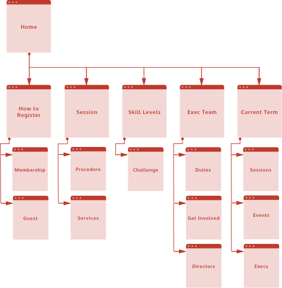

UWBC Website Redesign
Sep – Nov 2017
University of Waterloo Badminton Club (UWBC) organizes and hosts sessions and events for its members. The club's website is the main source of information but it has been neglected for years.

University of Waterloo Badminton Club (UWBC) organizes and hosts sessions and events for its members. The club's website is the main source of information but it has been neglected for years.
Problem: The UWBC website is the main source of information available to the general public. The website has not been updated for decades and uses stock CSS from the university. Users' expectation and the nature of how they interact with websites have changed drastically.
Client: University of Waterloo Badminton Club – a non-profit, student-run club
Role: Project management and design
Note: This was an individual project which I took upon myself. As a former director of the club, I had a good understanding for the need of this project and strong connections within the club.
Links: Final Prototype


Home Page

To Join Page

Level Information Link
Created using Google Forms and consisted of:

Likes
Dislikes
New/Prospective Members
Returning Members
Managing Directors
I used a card sorting technique to explore alternative sitemaps and sketched out various features to see how pages would look like with specific content.
Original Sitemap
Revised Sitemap
The original sitemap had a lot of options on the primary nav which can be overwhelming for new members.
The revised sitemap added more depth with meaningful labels and a logical progression along the nav.
Selected to showcase 3 of 7 pages (Home, How to Register, Skill Levels) from sketches to mockups.

InVision was used to create a clickable prototype from the initial mockups. I wanted to evaluate how easy/difficult it was for users to find certain content on the website.
Users were provided a scenario relating to one of the popular user tasks. For example:
"You don't have any equipment and are unsure of what you're supposed to bring to session or what options you have. Where would you find more information about this?"
Metrics
Duration: time to complete the task
Number of Errors: number of times the user clicked to a different page or went in the opposite direction
Ease: on a scale from 1 (very difficult) to 5 (very easy), the user was asked to rate the task upon completion

Values are averaged from the number of participants who completed each task
Likes
Dislikes
Users perform and think differently. Given the same task, individuals may take different approaches or have different navigation mental models.
The tasks used target finding specific information but some users may consume information by browsing without needing to find anything in particular.
Overall improvement compared to the original website based on 'appearance' and 'ease of navigation' which scored 4.8 and 4.0 on a 5-point Likert scale respectively (this can be compared to the baseline which scored 2.4 and 3.3 respectively).
I have decided to present just the Home page for the iterations and the Final InVision Prototype.
Aside from user feedback I received from testing, I also got some feedback form friends who work as product designers and web developers.
Although the initial prototype seemed to be an overall improvement from the original design, the usability test helped me understand what components still needed to addressed allowed me to move on with further iteration.
Feedback (Version 1)
Feedback (Version 2)
Although I had a good idea of how each step in the design process would pan out, putting it into practise provided really good experience. The feedback from both users and experts tremendously helped me understand what to look for and how to design with intention and care.